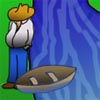

El granjero, la cabra y la col
Descripción|  | En el problema del granjero, nos plantean lo que sigue: Tenemos un granjero, una cabra y una col que se encuentran a la orilla izquierda de un río. |
El objetivo es que pasen a la parte derecha del rio. Para ello tienen una barca, que es tripulada por el granjero y en la que sólo puede ir con él un pasajero en cada momento. El lobo se come a la cabra si se quedan sólos en un lado del río, lo mismo pasa con la cabra y la col.
RepresentaciónA partir de este enunciado hemos tomado como estado la posición del granjero, el lobo, la cabra y la col con una tupla booleana, que es True si cualquiera de ellos se encuentra en la orilla izquierda del río y False en caso contrario.
- Estado inicial: (True,True,True,True), todos en la orilla izda
- Estado objetivo: (False,False,False,False), todos en la dcha
A partir del estado inicial se crea el espacio de estados, aplicando una serie de operadores que hemos definido, basándonos en el enunciado:
- Granjero "Pasar el granjero sólo."
- Lobo "Pasar granjero y lobo."
- Cabra "Pasar granjero y cabra."
- Col "Pasar granjero y col."
Cada uno de estos operadores se podrá aplicar a un estado siempre y cuando éste cumpla su precondición:
- Ejemplo: "Lobo" , sólo se puede mover el granjero y el lobo hacia la otra orilla, si en la orilla que dejan no se encuentra la cabra y la col.
En cuanto a las estrategias utilizadas para este problema de representación, hemos utilizado únicamente estrategias no informadas:
- Búsqueda con Profundización Iterativa (IDS)
- Tiempo de ejecución: Aprox. 80 ms.
- Número de nodos expandidos: 100
- Solución: En 7 pasos(Cabra,Granjero,Lobo,Cabra,Col,Granjero,Cabra)
- Búsqueda Primero en Anchura (BFS)
- Tiempo de ejecución: Aprox. 30 ms.
- Número de nodos expandidos: 110
- Solución: En 7 pasos(Cabra,Granjero,Lobo,Cabra,Col,Granjero,Cabra)
- Búsqueda Primero en Profundidad (DFS)
- No se llega a la solución, debido a que se queda infinitamente ciclando.
- Búsqueda con límite de Profundidad (DLS)
- El límite en profundidad utilizado es 7.
- Tiempo de ejecución: Aprox. 20 ms.
- Número de nodos expandidos: 35
- Solución: En 7 pasos(Cabra,Granjero,Lobo,Cabra,Col,Granjero,Cabra)
Por lo que se puede apreciar en este problema en concreto es que, aunque para todas las estrategias (excepto DFS) la resolución es satisfactoria y rápida, parece que la que mejor lo resuelve es DLS ya que expande un tercio de los nodos que expanden las otras.